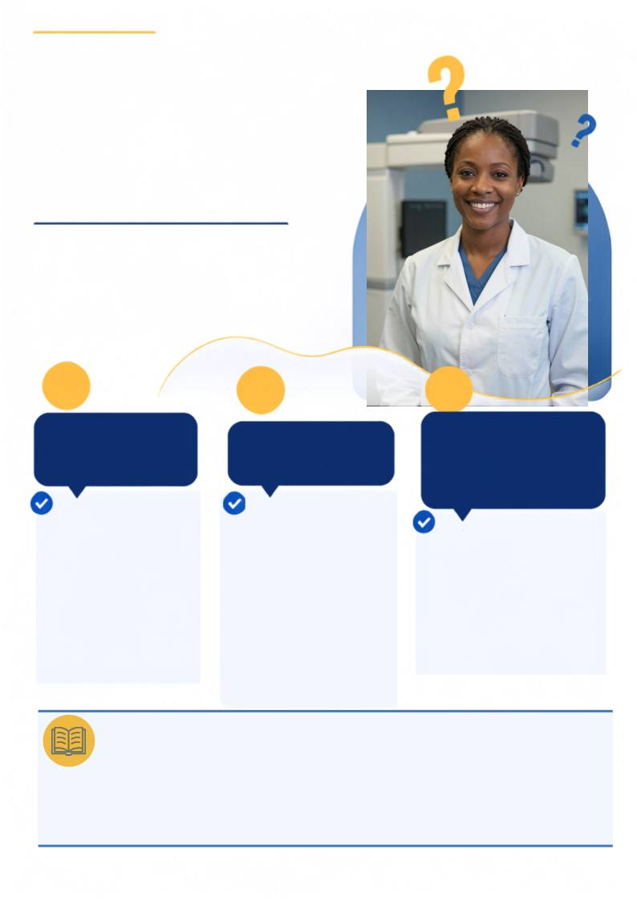

SERVIÇO • RADIOLOGIA
ISSO PODE?
Dúvidas gerais de Radiologia
Respostas claras e objetivas para
perguntas que fazem parte da
rotina de quem cuida de imagens
e de pessoas.
01
1 - Sim. A gravidez não
contraindica o exame
quando ele for
clinicamente
justificado. A exposição
deve ser otimizada,
utilizando a menor
dose necessária para
obter uma imagem
diagnóstica adequada
[1].
02
2 - O uso de protetores
de chumbo é uma boa
prática de proteção
radiológica,
especialmente para áreas
radiossensíveis, sempre
que possível e sem
prejudicar a imagem.
A aplicação deve
considerar o princípio
ALARA, a literatura e os
protocolos institucionais
[1, 2].
03
3 - Sim, é recomendado, não
causa aquecimento e não é
danificado pela ação do
campo magnético, apenas
uma pequena área ao redor
do chip fica obscurecida mas
não compromete a avaliação
[3, 4].
Posso fazer um
exame de raios X
estando grávida?
Preciso utilizar
proteção de chumbo
no paciente
Paciente que possui
próteses de silicone
mamária com chip ,
podem realizar exame de
Ressonância Magnética?
ALÉM DA IMAGEM · CORED-SP · CRTR-SP
29
REFERÊNCIAS
1. Brasil. Ministério da Saúde. Agência Nacional de Vigilância Sanitária. Resolução RDC nº 611, de 9 de março de 2022. Diário Oficial
da União [Internet]. 2022 mar 16 [citado 2026 set 2];51(Seção 1):107. Disponível em: https://www.in.gov.br/en/web/dou/-/resolucao-
rdc-n-611-de-9-de-marco-de-2022-386107075
2. Bontrager KL, Lampignano JP. Tratado de posicionamento radiográfico e anatomia associada. 8ª ed. Rio de Janeiro: Elsevier;
2015.
3. Munhoz AM, et al. Usefulness of radio frequency identification device in diagnosing rotation of Motiva SmoothSilk implants after
augmentation mammoplasty. Plast Reconstr Surg Glob Open. 2019;7(11):e2497. Available from:
https://doi.org/10.1977/GOX.000000000002497
4. Schiaffino S, et al. MRI conditional breast tissue expander: first in human multi-case assessment of MRI-related complications
and image quality. J Clin Med. 2023;12(13):4410. Available from: https://doi.org/10.3390/jcm12134410